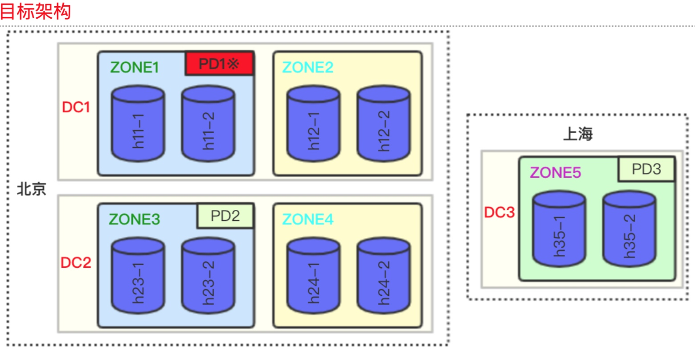
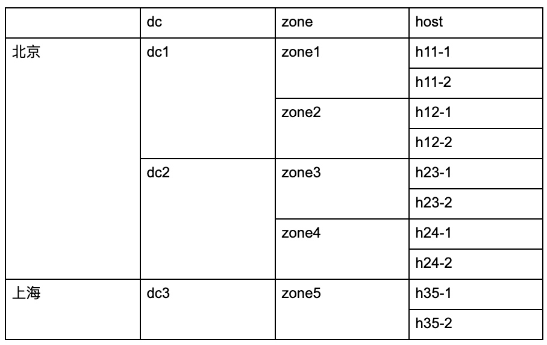

05 现有集群如何从单机房调整为跨机房部署
李坤 2020 年 2 月 24 日
一、背景
数据库的高可用是生产系统上线的非常重要的前提，TiDB 利用 raft 分布式一致性协议，将数据通过多副本的方式实现了强一致性。所以我们可以利用强一致性的多个副本，来实现机房级别的高可用，任何一个机房的故障。目前比较常见的 2 个方案是同城三中心三副本，和两地三中心五副本。很多企业会有多个 IDC，如果一开始 TiDB 集群部署在了一个 IDC，想调整为跨机房的部署方案，可以参考本文档的建议步骤。
二、相关原理及注意事项
- Raft 多副本一致性是通过超过半数副本落地成功来算的，所以为了防止脑裂，通常副本数建议是奇数个。
- 由于要落地过半副本，对于同城中心之间网络延时，建议在 1~2 ms 为优。
- 由于架构变更，如果要调整副本个数，比如从 3 副本调整到 5 副本，是可以在线调整的，PD 会根据新的副本数量进行在线调度。
- 由于网络的影响，调整后的业务响应时间会有所牺牲，建议提前在测试集群做好性能测试。
- 机器网卡一定用万兆网卡，有条件可以 2 块物理网卡 Bonding
- label 的更多介绍参考文档。
三、操作步骤
我们将常见的 2 种跨机房部署的方式，分别作介绍。
说明：
- 机架感知主要靠 label，label 的生效需要 tikv 和 pd 同时设置，才能互相理解。
- 如果是初次启动的集群， label 会在 tikv 及 pd 的配置文件中设置，启动后会持久化到存储中，配置文件则不再起作用。对于下面 2 种方案中非初次启动的集群，则需要使用 pd-ctl 工具进行 label 名称设置。
3.1 单机房部署，调整为同城三中心部署

搬移 TiKV
跨机房部署为了实现 IDC 级别的 HA，需要保证所有 region 的 3 个副本，在 3 个 IDC 各占一个副本。这需要给每个 tikv 实例打上 label 标签来实现机架感知。原架构为单机房部署，无论原来的单机房架构有没有配置 label，调整机房后需要调整 label，增加一个值为 zone 的 label。
先把 region-schedule-limit 调整为 0，避免反复搬迁数据（1、2 搬到 7~10 上）
pd-ctl -d -u http://pd_ip:4439 config show all |grep region-schedule-limit //记录原始值 pd-ctl -d -u http://pd_ip:4439 config set region-schedule-limit 0
在 IDC2 和 IDC3 扩容一样数量的 tikv，使用新的 label 部署。 具体的扩容步骤，请参考扩缩容的文档，注意在部署时 inventory 添加上 label，label 要和真实的物理拓扑一致
[tikv_servers] TiKV7 ansible_host=172.xxx deploy_dir=xxx tikv_port=20171 tikv_status_port=20181 labels="zone=idc2,host=h7"检查 新扩容的 tikv，label 已经配置
pd-ctl -d -u http://pd_ip:4439 label store … ...
"labels": [ { "key": "zone", "value": "idc2" }, { "key": "host", "value": "h7" }… ...
在新扩容的 tikv 7、8、9、10 正常运行以后，使用 pd-ctl 调整 tikv 1~6 的 label，以 tikv1 为例，下面的命令设置 store_id 为 1 的 store 的 “zone” 的 label 为 “idc1”，“host” 的 label 为 “h1” 。tikv 的 store_id 可以通过
pd-ctl -d -u http://pd_ip:4439 store来获得pd-ctl -d -u http://pd_ip:4439 store label 1 zone idc1 pd-ctl -d -u http://pd_ip:4439 store label 1 host h1
设置 PD 的 label 开关，让 PD 可以理解所有的 label
pd-ctl -d -u http://pd_ip:4439 config set location-labels zone,host
调回 region-schedule-limit ，开启 balance，balance 和 下线可以一起做
pd-ctl -d -u http://pd_ip:4439 config set region-schedule-limit [old_value]
一台一台缩容 TiKV 3~6，确保 tombstone 以后再缩容下一台 具体的缩容步骤，请参考扩缩容的文档，查看状态使用：
pd-ctl -d -u http://pd_ip:4439 store 3 |grep state_name这一步会真正的搬迁数据，所以耗时比较长
迁移 PD
确保 PD 在每个机房有一个节点
- 扩容 PD4 和 PD5，具体的缩容步骤，请参考扩缩容的文档
- 缩容 PD2 和 PD3，具体的缩容步骤，请参考扩缩容的文档
该方案的注意事项
- 同城 3 机房，延迟差不多，所以最终所有 IDC 上 region 的 leader 个数是平均的；
- 最终的 3 个 PD 是对等的，没有特殊需要，不需要关注 leader 的位置；
- Tidb-server 是无状态进程，在哪个机房是对等的，所以可以按需扩缩容，比较简单；
- 每个 IDC 的机器配置、数量保持一致，避免数据不均，扩容 tikv 也要以相同的比例；
- 跨机房的架构会比单机房的响应时间延长，建议提前做好压测再决定迁移。
3.2 单机房部署，调整为两地三中心部署

两地三中心的方案，特点是部署在两个城市，主要访问在北京（所有 leader 在北京），异地可以做灾备，任何一个 datacenter（后面简称 dc）故障均能保证数据不丢失。推荐使用 5 副本，北京 有 2 个 dc，每个 dc 有 2 个 zone，上海有一个 zone，这样组成了 5 个独立的 zone，各存储一份副本。其目的是在具有相近物理位置的 tikv 上只放置一个副本，以尽可能的提高 tikv 集群的可用性。
PD 调度到第一层 Label 发现有 3 个不同的 dc 值，无法在本层实现 5 副本的隔离；进而发现第二层 zone 可以实现 5 副本的隔离调度，最终一个 region 的 5 个副本会在各个 zone 平均分配，因此每个 zone 所承载的 region 数量会应完全一致，也就是每个 zone 的机器数量应一致。

该需求的调整方案有两种，一种是，先部署好两地三中心的空集群，通过原集群的 binlog 做实时数据同步，同步后业务切换读写流量，这种方案逻辑比较简单，也是比较稳妥的方案。另一种是类似上一节扩缩容的方案，但操作较多，不重点推荐，需要经过操作测试，可以参考下面的步骤进行测试：
迁移 TiKV
- 具体的迁移思路和上面方案类似，主要区别是多了一些异地机房的限制：
- 先把 region-schedule-limit 调整为 0
- 禁止向异地机房调度 raft leader：
config set label-property reject-leader dc dc3 扩容所有 zone 的 tikv。另外由于副本数调整为 5，机器的总规模需要根据实际数据量大小增加，扩容的步骤参考扩容文档，额外注意以下两点：
在扩容 tikv 时，为 TiKV 增加的 label 信息除了 zone 以外，增加一层 dc，如：
[tikv_servers] h11-1 ansible_host=172.xxx deploy_dir=xxx tikv_port=20171 tikv_status_port=20181 labels="dc=dc1,zone=zone1,host=h11-1"扩容前修改 tidb-ansible/conf/tikv.yml，启用 grpc 消息压缩：
server: grpc-compression-type: gzip
- 所有扩容的 tikv 启动后，pd-ctl 修改原 tikv 所有层次的 label，以一个 tikv 为例：
pd-ctl -d -u http://pd_ip:4439 store label 1 dc dc1 pd-ctl -d -u http://pd_ip:4439 store label 1 zone zone1 pd-ctl -d -u http://pd_ip:4439 store label 1 host xxx
- 设置 PD 的 label 开关，为 PD 增加部署位置信息：
pd-ctl -d -u http://pd_ip:4439 config set location-labels dc,zone,host
- 调整 PD balance 缓冲区大小，提高 pd 容忍度
pd-ctl -d -u http://pd_ip:4439 config set tolerant-size-ratio 20
- 调回 region-schedule-limit
为异地 dc3 的 TiKV 增加额外配置后重启这些 TiKV，以削弱网络抖动造成的影响。这需要在 tikv 部署目录下 conf/tikv.yml 中修改参数，重启 tikv 实例。并注意在日后升级等运维 ansible deploy 操作不要修改它：
[raftstore] raft-min-election-timeout-ticks= 1000 raft-max-election-timeout-ticks= 1020一台一台缩容原 zone 多余的 tikv，确保 tombstone 以后再缩容下一台
- 修改 TiKV raft 副本数量，这会持续较长时间，进行补副本操作：
config set max-replicas 5
迁移 PD
- 确保 PD 集群在每个 dc 有一个节点，具体的扩缩容步骤，请参考扩缩容的文档
- 设置 3 个 PD 的优先级，避免 leader 切到异地机房(数字越大优先级越高)：
member leader_priority pd1 3 member leader_priority pd2 2 member leader_priority pd3 1
为避免异地机房网络不稳定导致其 PD 异常选举，可以选择为其配置更长的
election timeout。设置方法是：修改PD部署目录下deploy_dir/conf/pd.toml，在配置文件最外层加一行。然后重启该 PD 节点。election-interval = "3s"
该方案的注意事项
- 首先除非必要，由于调整较大，并不推荐从线上单机房集群直接用该方案调整部署拓扑，需要提前做好测试，确认网络对性能的影响；
- 每个 zone 的机器数量要保持相同，避免数据不均，扩容 tikv 也要以相同的比例；
- Tidb-server 要部署在 dc1 或者 dc2 ，因为要保证和 region 及 PD 的 leader 更近；
- 推荐 5 副本的原因是，任何一个 zone 故障，业务及性能都有保障，除非一个 dc 都故障；而 3 副本则任一 zone 故障，由于要访问异地机房会影响性能。可以根据成本和对性能的要求决定副本数。
四、操作后 Check 监控项
确认所有的 tikv 的 label 正确
pd-ctl -d -u http://pd_ip:4439 label store
确认业务的响应时间，比调整前是否有较大影响
- 随着数据的逐步搬迁，最终绝大多数 region 都满足第一级 label。有个别分裂或 balance 的 region 在 host 级别属于正常。